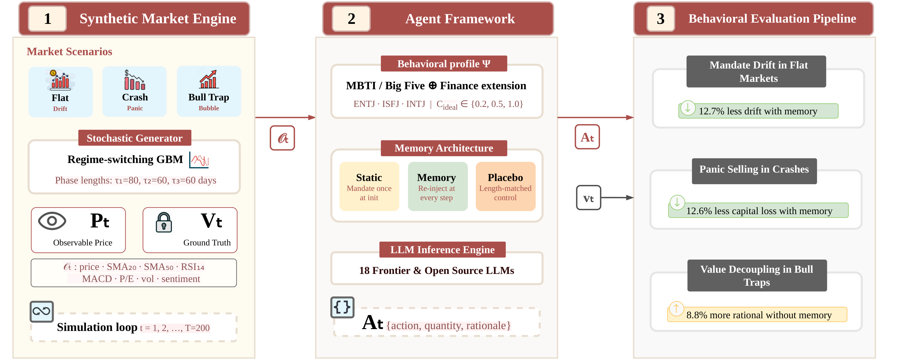
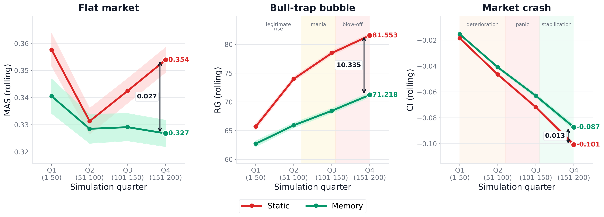
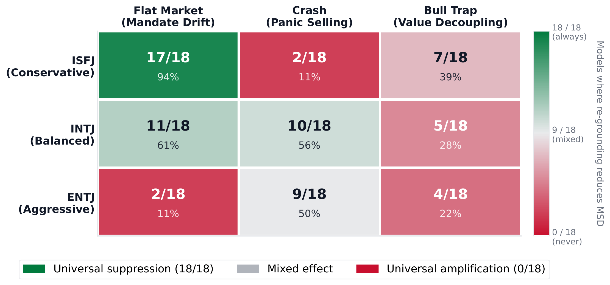
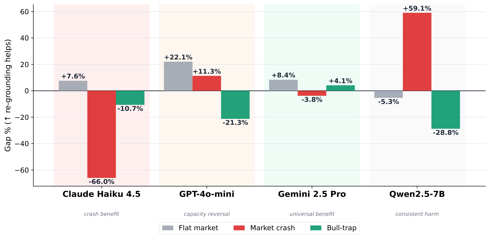

Large Language Models (LLMs) are increasingly deployed as autonomous financial agents initialized with explicit behavioral mandates such as "preserve capital" or "avoid speculative bets" that are meant to govern every decision throughout deployment. In practice, however, as market context accumulates over long horizons, these mandates gradually lose their behavioral influence -a phenomenon we formalize as Mandate Salience Decay (MSD).
To measure MSD objectively, we introduce FinPersona-Bench, a simulation benchmark in which a synthetic market decouples observable price from hidden fundamental value, enabling falsifiable evaluation across three failure modes: trading without signal in calm markets, panic-selling during crashes, and ignoring fundamental value during speculative bubbles. Evaluating 18 leading frontier and open-source LLMs, each assigned one of three behavioral profiles ranging from strict capital preservation to aggressive growth, shows that MSD compounds over time and is model-dependent. In crash scenarios, the behavioral gap between static agents and those receiving periodic mandate re-grounding grows 4.4× from the first to the final quarter of the simulation. The effects of mandate re-grounding are not uniformly positive: it consistently helps conservative agents in low-signal markets but actively worsens behavior for aggressive agents in the same setting. These findings suggest that reliable long-horizon deployment requires selective, mandate-aware re-grounding based on agent profile and market regime.

Figure 2: FinPersona-Bench system architecture showing the three-module pipeline.
FinPersona-Bench consists of three tightly coupled components. The Synthetic Market Engine generates financial time series with mathematically defined properties, decoupling observable price Pt from hidden fundamental value Vt via scenario-specific stochastic processes. This provides an objective ground truth unavailable in historical markets.
The Agent Framework maps observable market state and a behavioral profile Psi (grounded in MBTI personas: ENTJ, ISFJ, INTJ) to a deterministic trade decision At = {action, quantity, rationale}. Three architectural variants are compared: a static baseline (mandate once at initialization), a placebo control (length-matched boilerplate re-injected each step), and mandate re-grounding (core mandate re-injected at every decision step).
The Behavioral Evaluation Pipeline measures MSD across three failure modes using the hidden fundamental value as ground truth, capturing mandate drift, panic selling, and value decoupling independently.
Scenario ABull Trap
Price initially tracks fundamental value, then decouples via cumulative FOMO drift creating a speculative bubble with surging volume. Tests whether agents distinguish legitimate growth from overvaluation.
Failure mode: Value Decoupling -agents ignore hidden fundamental value and chase observable price.
Metric: Rationality Gap (RG)
Scenario BMarket Crash
A sharp price drop below fundamental value via a panic discount parameter δ ∈ {0.85, 0.92, 0.95}. Models a real-world liquidity crisis where assets become oversold and a rational agent should hold or buy.
Failure mode: Panic Selling -agents liquidate under stress, amplifying their default behavioral tendencies.
Metric: Caricature Index / Maximum Drawdown
Scenario CFlat Market
GARCH-like volatility with no significant trend (μ ≈ 0). No meaningful trading signals are present. Tests whether agents maintain their assigned mandate and target cash allocation without external pressure.
Failure mode: Mandate Drift -agents progressively deviate from their target allocation as context grows.
Metric: Mandate Adherence Score (MAS)

Figure 3: Rolling metrics (MAS: flat market; RG: bull trap; CI: crash) averaged across models, personas, and seeds over four 50-day quartiles (T = 200). In the crash scenario, the static-memory gap grows monotonically, reaching approximately 4.4x its Q1 magnitude by Q4.
Decomposing the 200-day simulation into quartiles reveals that the static-vs-memory divergence compounds over time rather than remaining constant. The crash scenario provides the clearest signature: the gap in cumulative capital drawdown grows from 1.0x in Q1 to 4.4x by Q4.
In flat markets, static agents remain stable through Q2 before drifting upward from Q3, while memory agents maintain a stable behavioral anchor. In the bull trap, static agents become increasingly rational as conditions stabilize, whereas memory agents over-apply their conservative mandate throughout.
These temporally shifting patterns confirm that observed gaps represent genuine progressive mandate erosion, not fixed architectural offsets.
Re-grounding effectiveness is not universal -it depends critically on the alignment between the assigned persona and market pressure. For the capital-preservation ISFJ persona, re-grounding suppresses flat-market drift in 17 of 18 models, with five achieving perfect adherence (MAS = 0.000).
Conversely, the aggressive ENTJ persona produces a near mirror image. Re-grounding worsens mandate adherence in flat markets for 16 of 18 models -re-injecting instructions to trade decisively in a signal-less market actively amplifies drift rather than suppressing it, by up to 156.4%.
The balanced INTJ persona yields mixed outcomes (11/18), sensitive to model-specific training rather than systematic environmental conflict. This bidirectional pattern holds across both MBTI and Big Five (OCEAN) persona frameworks.

Figure 4: Number of models (out of 18) where re-grounding reduces MSD vs. the static baseline. Near-bidirectional split in flat markets (17/18 vs. 2/18) shows that persona content dictates re-grounding success.

Figure 5: Re-grounding gap (%) for four representative models across three failure modes. Positive gaps indicate re-grounding reduces MSD.
Individual model families reveal four distinct response profiles:
Relative performance difference (% Δ) of memory re-grounded agents vs. static baseline across three failure modes.
Green = re-grounding reduces MSD
Red = re-grounding amplifies failure
| Family | Model |
Flat MAS %Δ |
Crash CI %Δ |
Bull Trap RG %Δ |
|---|---|---|---|---|
| Anthropic Claude Family | ||||
| Claude | Haiku 4.5 | +7.6% | +66.0% | −10.7% |
| Claude | Sonnet 4.6 | +0.1% | +8.3% | −2.9% |
| Claude | Opus 4.6 | −0.5% | +38.3% | −6.4% |
| OpenAI GPT Family | ||||
| GPT | 4o | +4.1% | +31.8% | −11.6% |
| GPT | 4o-Mini | +22.1% | −11.3% | −21.3% |
| GPT | 4.1 Base | +16.0% | +30.9% | −7.4% |
| GPT | 4.1 Mini | +9.6% | −21.3% | −6.7% |
| GPT | 5 Mini | +37.8% | +5.1% | +16.5% |
| GPT | 5.4 Base | +35.1% | +11.3% | −8.1% |
| GPT | 5.4 Mini | +3.0% | −9.7% | −9.0% |
| Google Gemini Family | ||||
| Gemini | 2.5 Flash | +28.2% | −28.3% | −0.8% |
| Gemini | 2.5 Pro | +8.4% | +3.8% | +4.1% |
| Gemini | 3.1 Pro Preview | +11.6% | +21.6% | +7.5% |
| Independent Baseline | ||||
| DeepSeek | V3 Chat | +13.6% | +21.0% | −8.8% |
| Open-Source Models | ||||
| Meta | Llama-3.1-8B | +40.5% | +19.5% | −15.3% |
| Gemma-2-9B | −2.7% | +33.9% | −26.3% | |
| Alibaba | Qwen2.5-7B | −5.4% | −59.1% | −28.8% |
| Gemma-3-4B | +3.3% | −15.0% | −18.4% | |
Table 11: Full Per-Model MSD Gaps. Relative performance difference (%Δ) between memory re-grounded and static agents across the three evaluated failure modes: Mandate Drift (MAS), Panic Selling (CI), and Value Decoupling (RG). Positive values indicate that memory re-grounding successfully mitigated mandate decay; negative values indicate that re-grounding amplified the failure mode.
| Failure Mode | Scenario | Metric | Static | Memory | Gap% | p-value |
|---|---|---|---|---|---|---|
| Mandate Drift | Flat | MAS ↓ | 0.391 ± 0.201 | 0.342 ± 0.206 | −12.7% | 0.028 † |
| Panic Selling | Crash | CI ↑ | −26.18 ± 14.29 | −22.89 ± 17.44 | −12.6% | 0.002 ‡ |
| Value Decoupling | Bull Trap | RG ↑ | 85.9 ± 11.1 | 78.4 ± 18.7 | +8.8% | <0.001 § |
Table 1: Three Failure Modes of MSD. Static vs. memory re-grounded performance across 18 models, 3 personas, and 5 seeds (N = 270 pairs/metric). Gap% is the relative change from static to memory. Negative gaps in MAS and CI favor memory (less deviation/drawdown); positive gaps in RG favor static (higher rationality). Optimal direction marked by ↓ / ↑. Wilcoxon significance: †p < 0.05, ‡p < 0.01, §p < 0.001.
FinPersona-Bench demonstrates that Mandate Salience Decay is a compounding behavioral phenomenon distinct from reasoning errors: agents can violate their behavioral mandates while still making locally coherent and even profitable trades. MSD widens the behavioral gap in market crashes by 4.4× over the simulation horizon.
A placebo control confirms that re-grounding effects are driven by mandate semantic content rather than positional recency. A Big Five validation shows MSD is not an artifact of the MBTI framework. Crucially, re-grounding effectiveness depends strongly on persona-scenario alignment: enforcing misaligned mandates in speculative regimes or for aggressive personas actively degrades agent rationality.
These findings point toward a practical design principle: selective, mandate-aware re-grounding tuned to agent profile and market regime, rather than blanket universal application. Future work will pursue mechanistic explanations of mandate token salience loss, extend injection frequency ablations across the full model suite, and apply the decoupled ground-truth methodology to sensitive deployment domains such as medical triage and legal compliance.